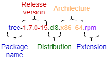

Software Management
Generalities
On a Linux system, it is possible to install software in two ways:
* Using an installation package;
* Compiling from source files.
!!! Note
Installing from source is not covered here. As a rule, you should use the package method unless the software you want is not available via the package manager. The reason for this is that dependencies are generally managed by the package system, whereas with source, you need to manage the dependencies manually.
The package: This is a single file containing all the data needed to install the program. It can be executed directly on the system from a software repository.
The source files : Some software is not provided in packages ready to be installed, but via an archive containing the source files. It is up to the administrator to prepare these files and compile them to install the program.
RPM : RedHat Package Manager
RPM (RedHat Package Manager) is a software management system. It is possible to install, uninstall, update or check software contained in packages.
RPM is the format used by all RedHat based distributions (RockyLinux, Fedora, CentOS, SuSe, Mandriva, ...). Its equivalent in the Debian world is DPKG (Debian Package).
The name of an RPM package follows a specific nomenclature:

rpm command
The rpm command allows you to install a package.
rpm [-i][-U] package.rpm [-e] package
Example (for a package named 'package'):
rpm -ivh package.rpm
| Option | Description |
|---|---|
-i package.rpm |
Installs the package. |
-U package.rpm |
Updates an already installed package. |
-e package.rpm |
Uninstalls the package. |
-h |
Displays a progress bar. |
-v |
Informs about the progress of the operation. |
--test |
Tests the command without executing it. |
The rpm command also allows you to query the system package database by adding the -q option.
It is possible to execute several types of queries to obtain different information about the installed packages. The RPM database is located in the directory /var/lib/rpm.
Example:
rpm -qa
This command queries all the packages installed on the system.
rpm -q [-a][-i][-l] package [-f] file
Example:
rpm -qil package
rpm -qf /path/to/file
| Option | Description |
|---|---|
-a |
Lists all packages installed on the system. |
-i __package__ |
Displays the package information. |
-l __package__ |
Lists the files contained in the package. |
-f |
Shows the name of the package containing the specified file. |
--last |
The list of packages is given by installation date (the last installed packages appear first). |
!!! Warning
After the `-q` option, the package name must be exact. Metacharacters (wildcards) are not supported.
!!! Tip
However, it is possible to list all installed packages and filter with the `grep` command.
Example: list the last installed packages:
sudo rpm -qa --last | head
NetworkManager-config-server-1.26.0-13.el8.noarch Mon 24 May 2021 02:34:00 PM CEST
iwl2030-firmware-18.168.6.1-101.el8.1.noarch Mon 24 May 2021 02:34:00 PM CEST
iwl2000-firmware-18.168.6.1-101.el8.1.noarch Mon 24 May 2021 02:34:00 PM CEST
iwl135-firmware-18.168.6.1-101.el8.1.noarch Mon 24 May 2021 02:34:00 PM CEST
iwl105-firmware-18.168.6.1-101.el8.1.noarch Mon 24 May 2021 02:34:00 PM CEST
iwl100-firmware-39.31.5.1-101.el8.1.noarch Mon 24 May 2021 02:34:00 PM CEST
iwl1000-firmware-39.31.5.1-101.el8.1.noarch Mon 24 May 2021 02:34:00 PM CEST
alsa-sof-firmware-1.5-2.el8.noarch Mon 24 May 2021 02:34:00 PM CEST
iwl7260-firmware-25.30.13.0-101.el8.1.noarch Mon 24 May 2021 02:33:59 PM CEST
iwl6050-firmware-41.28.5.1-101.el8.1.noarch Mon 24 May 2021 02:33:59 PM CEST
Example: list the installation history of the kernel:
sudo rpm -qa --last kernel
kernel-4.18.0-305.el8.x86_64 Tue 25 May 2021 06:04:56 AM CEST
kernel-4.18.0-240.22.1.el8.x86_64 Mon 24 May 2021 02:33:35 PM CEST
Example: list all installed packages with a specific name using grep:
sudo dnf list installed | grep httpd
centos-logos-httpd.noarch 80.5-2.el8 @baseos
httpd.x86_64 2.4.37-30.module_el8.3.0+561+97fdbbcc @appstream
httpd-filesystem.noarch 2.4.37-30.module_el8.3.0+561+97fdbbcc @appstream
httpd-tools.x86_64 2.4.37-30.module_el8.3.0+561+97fdbbcc @appstream
DNF : Dandified Yum
DNF (Dandified Yum) is a software package manager, successor of YUM (Yellow dog Updater Modified). It works with RPM** packages grouped in a local or remote repository (a directory for storing packages). For the most common commands, its usage is identical to that of yum.
The dnf command allows the management of packages by comparing those installed on the system with those in the repositories defined on the server. It also automatically installs dependencies, if they are also present in the repositories.
dnf is the manager used by many RedHat based distributions (RockyLinux, Fedora, CentOS, ...). Its equivalent in the Debian world is APT (Advanced Packaging Tool).
dnf command
The dnf command allows you to install a package by specifying only the short name.
dnf [install][remove][list all][search][info] package
Example:
dnf install tree
Only the short name of the package is required.
| Option | Description |
|---|---|
install |
Installs the package. |
remove |
Uninstall the package. |
list all |
Lists the packages already in the repository. |
search |
Search for a package in the repository. |
provides */command_name |
Search for a command. |
info |
Displays the package information. |
autoremove |
Removes all packages installed as dependencies but no longer needed. |
The dnf install command allows you to install the desired package without worrying about its dependencies, which will be resolved directly by dnf itself.
dnf install nginx
Last metadata expiration check: 3:13:41 ago on Wed 23 Mar 2022 07:19:24 AM CET.
Dependencies resolved.
============================================================================================================================
Package Architecture Version Repository Size
============================================================================================================================
Installing:
nginx aarch64 1:1.14.1-9.module+el8.4.0+542+81547229 appstream 543 k
Installing dependencies:
nginx-all-modules noarch 1:1.14.1-9.module+el8.4.0+542+81547229 appstream 22 k
nginx-mod-http-image-filter aarch64 1:1.14.1-9.module+el8.4.0+542+81547229 appstream 33 k
nginx-mod-http-perl aarch64 1:1.14.1-9.module+el8.4.0+542+81547229 appstream 44 k
nginx-mod-http-xslt-filter aarch64 1:1.14.1-9.module+el8.4.0+542+81547229 appstream 32 k
nginx-mod-mail aarch64 1:1.14.1-9.module+el8.4.0+542+81547229 appstream 60 k
nginx-mod-stream aarch64 1:1.14.1-9.module+el8.4.0+542+81547229 appstream 82 k
Transaction Summary
============================================================================================================================
Install 7 Packages
Total download size: 816 k
Installed size: 2.2 M
Is this ok [y/N]:
In case you don't remember the exact name of the package, you can search for it with the command dnf search name. As you can see, there is a section that contains the exact name and another one that contains the package correspondence, all of which are highlighted for easier searching.
dnf search nginx
Last metadata expiration check: 0:20:55 ago on Wed 23 Mar 2022 10:40:43 AM CET.
=============================================== Name Exactly Matched: nginx ================================================
nginx.aarch64 : A high performance web server and reverse proxy server
============================================== Name & Summary Matched: nginx ===============================================
collectd-nginx.aarch64 : Nginx plugin for collectd
munin-nginx.noarch : NGINX support for Munin resource monitoring
nginx-all-modules.noarch : A meta package that installs all available Nginx modules
nginx-filesystem.noarch : The basic directory layout for the Nginx server
nginx-mod-http-image-filter.aarch64 : Nginx HTTP image filter module
nginx-mod-http-perl.aarch64 : Nginx HTTP perl module
nginx-mod-http-xslt-filter.aarch64 : Nginx XSLT module
nginx-mod-mail.aarch64 : Nginx mail modules
nginx-mod-stream.aarch64 : Nginx stream modules
pagure-web-nginx.noarch : Nginx configuration for Pagure
pcp-pmda-nginx.aarch64 : Performance Co-Pilot (PCP) metrics for the Nginx Webserver
python3-certbot-nginx.noarch : The nginx plugin for certbot
Another way to search for a package by entering an additional search key is to send the result of the dnf command through a pipe to the grep command with the desired key.
dnf search nginx | grep mod
Last metadata expiration check: 3:44:49 ago on Wed 23 Mar 2022 06:16:47 PM CET.
nginx-all-modules.noarch : A meta package that installs all available Nginx modules
nginx-mod-http-image-filter.aarch64 : Nginx HTTP image filter module
nginx-mod-http-perl.aarch64 : Nginx HTTP perl module
nginx-mod-http-xslt-filter.aarch64 : Nginx XSLT module
nginx-mod-mail.aarch64 : Nginx mail modules
nginx-mod-stream.aarch64 : Nginx stream modules
The dnf remove command removes a package from the system and its dependencies. Below is an excerpt of the dnf remove httpd command.
dnf remove httpd
Dependencies resolved.
============================================================================================================================
Package Architecture Version Repository Size
============================================================================================================================
Removing:
httpd aarch64 2.4.37-43.module+el8.5.0+727+743c5577.1 @appstream 8.9 M
Removing dependent packages:
mod_ssl aarch64 1:2.4.37-43.module+el8.5.0+727+743c5577.1 @appstream 274 k
php aarch64 7.4.19-1.module+el8.5.0+696+61e7c9ba @appstream 4.4 M
python3-certbot-apache noarch 1.22.0-1.el8 @epel 539 k
Removing unused dependencies:
apr aarch64 1.6.3-12.el8 @appstream 299 k
apr-util aarch64 1.6.1-6.el8.1 @appstream 224 k
apr-util-bdb aarch64 1.6.1-6.el8.1 @appstream 67 k
apr-util-openssl aarch64 1.6.1-6.el8.1 @appstream 68 k
augeas-libs aarch64 1.12.0-6.el8 @baseos 1.4 M
httpd-filesystem noarch 2.4.37-43.module+el8.5.0+727+743c5577.1 @appstream 400
httpd-tools aarch64 2.4.37-43.module+el8.5.0+727+743c5577.1
...
The dnf list command lists all the packages installed on the system and present in the repository. It accepts several parameters:
| Parameter | Description |
|---|---|
all |
Lists the installed packages and then those available on the repositories. |
available |
Lists only the packages available for installation. |
updates |
Lists packages that can be upgraded. |
obsoletes |
Lists the packages made obsolete by higher versions available. |
recent |
Lists the latest packages added to the repository. |
The dnf info command, as you might expect, provides detailed information about a package:
dnf info firewalld
Last metadata expiration check: 15:47:27 ago on Tue 22 Mar 2022 05:49:42 PM CET.
Installed Packages
Name : firewalld
Version : 0.9.3
Release : 7.el8
Architecture : noarch
Size : 2.0 M
Source : firewalld-0.9.3-7.el8.src.rpm
Repository : @System
From repo : baseos
Summary : A firewall daemon with D-Bus interface providing a dynamic firewall
URL : http://www.firewalld.org
License : GPLv2+
Description : firewalld is a firewall service daemon that provides a dynamic customizable
: firewall with a D-Bus interface.
Available Packages
Name : firewalld
Version : 0.9.3
Release : 7.el8_5.1
Architecture : noarch
Size : 501 k
Source : firewalld-0.9.3-7.el8_5.1.src.rpm
Repository : baseos
Summary : A firewall daemon with D-Bus interface providing a dynamic firewall
URL : http://www.firewalld.org
License : GPLv2+
Description : firewalld is a firewall service daemon that provides a dynamic customizable
: firewall with a D-Bus interface.
Sometimes you only know the executable you want to use but not the package that contains it, in this case you can use the command dnf provides */package_name which will search the database for you for the desired match.
Example of a search for the semanage command:
dnf provides */semanage
Last metadata expiration check: 1:12:29 ago on Wed 23 Mar 2022 10:40:43 AM CET.
libsemanage-devel-2.9-6.el8.aarch64 : Header files and libraries used to build policy manipulation tools
Repo : powertools
Matched from:
Filename : /usr/include/semanage
policycoreutils-python-utils-2.9-16.el8.noarch : SELinux policy core python utilities
Repo : baseos
Matched from:
Filename : /usr/sbin/semanage
Filename : /usr/share/bash-completion/completions/semanage
The dnf autoremove command does not need any parameters. Dnf takes care of searching for candidate packages for removal.
dnf autoremove
Last metadata expiration check: 0:24:40 ago on Wed 23 Mar 2022 06:16:47 PM CET.
Dependencies resolved.
Nothing to do.
Complete!
Other useful dnf options
| Option | Description |
|---|---|
repolist |
Lists the repositories configured on the system. |
grouplist |
Lists available package collections. |
clean |
Removes temporary files. |
The dnf repolist command lists the repositories configured on the system. By default it lists only the enabled repositories but can be used with these parameters:
| Parameter | Description |
|---|---|
--all |
Lists all the repositories. |
--enabled |
Default |
--disabled |
Lists only disabled repositories. |
Example:
dnf repolist
repo id repo name
appstream Rocky Linux 8 - AppStream
baseos Rocky Linux 8 - BaseOS
epel Extra Packages for Enterprise Linux 8 - aarch64
epel-modular Extra Packages for Enterprise Linux Modular 8 - aarch64
extras Rocky Linux 8 - Extras
powertools Rocky Linux 8 - PowerTools
rockyrpi Rocky Linux 8 - Rasperry Pi
And an excerpt of the command with the --all flag.
dnf repolist --all
...
repo id repo name status
appstream Rocky Linux 8 - AppStream enabled
appstream-debug Rocky Linux 8 - AppStream - Source disabled
appstream-source Rocky Linux 8 - AppStream - Source disabled
baseos Rocky Linux 8 - BaseOS enabled
baseos-debug Rocky Linux 8 - BaseOS - Source disabled
baseos-source Rocky Linux 8 - BaseOS - Source disabled
devel Rocky Linux 8 - Devel WARNING! FOR BUILDROOT AND KOJI USE disabled
epel Extra Packages for Enterprise Linux 8 - aarch64 enabled
epel-debuginfo Extra Packages for Enterprise Linux 8 - aarch64 - Debug disabled
epel-modular Extra Packages for Enterprise Linux Modular 8 - aarch64 enabled
epel-modular-debuginfo Extra Packages for Enterprise Linux Modular 8 - aarch64 - Debug disabled
epel-modular-source Extra Packages for Enterprise Linux Modular 8 - aarch64 - Source
...
And below is an excerpt from the list of disabled repositories.
dnf repolist --disabled
repo id repo name
appstream-debug Rocky Linux 8 - AppStream - Source
appstream-source Rocky Linux 8 - AppStream - Source
baseos-debug Rocky Linux 8 - BaseOS - Source
baseos-source Rocky Linux 8 - BaseOS - Source
devel Rocky Linux 8 - Devel WARNING! FOR BUILDROOT AND KOJI USE
epel-debuginfo Extra Packages for Enterprise Linux 8 - aarch64 - Debug
epel-modular-debuginfo Extra Packages for Enterprise Linux Modular 8 - aarch64 - Debug
epel-modular-source Extra Packages for Enterprise Linux Modular 8 - aarch64 - Source
epel-source Extra Packages for Enterprise Linux 8 - aarch64 - Source
epel-testing Extra Packages for Enterprise Linux 8 - Testing - aarch64
...
Using the -v option enhances the list with a lot of additional information. Below you can see part of the result of the command.
dnf repolist -v
...
Repo-id : powertools
Repo-name : Rocky Linux 8 - PowerTools
Repo-revision : 8.5
Repo-distro-tags : [cpe:/o:rocky:rocky:8]: , , 8, L, R, c, i, k, n, o, u, x, y
Repo-updated : Wed 16 Mar 2022 10:07:49 PM CET
Repo-pkgs : 1,650
Repo-available-pkgs: 1,107
Repo-size : 6.4 G
Repo-mirrors : https://mirrors.rockylinux.org/mirrorlist?arch=aarch64&repo=PowerTools-8
Repo-baseurl : http://mirror.netweaver.uk/rocky/8.5/PowerTools/aarch64/os/ (56 more)
Repo-expire : 172,800 second(s) (last: Tue 22 Mar 2022 05:49:24 PM CET)
Repo-filename : /etc/yum.repos.d/Rocky-PowerTools.repo
...
!!! info "Using Groups"
Groups are a collection of a set of packages (you can think of them as a virtual packages) that logically groups a set of applications to accomplish a purpose (a desktop environment, a server, development tools, etc.).
The dnf grouplist command lists all available groups.
dnf grouplist
Last metadata expiration check: 1:52:00 ago on Wed 23 Mar 2022 02:11:43 PM CET.
Available Environment Groups:
Server with GUI
Server
Minimal Install
KDE Plasma Workspaces
Custom Operating System
Available Groups:
Container Management
.NET Core Development
RPM Development Tools
Development Tools
Headless Management
Legacy UNIX Compatibility
Network Servers
Scientific Support
Security Tools
Smart Card Support
System Tools
Fedora Packager
Xfce
The dnf groupinstall command allows you to install one of these groups.
dnf groupinstall "Network Servers"
Last metadata expiration check: 2:33:26 ago on Wed 23 Mar 2022 02:11:43 PM CET.
Dependencies resolved.
================================================================================
Package Architecture Version Repository Size
================================================================================
Installing Groups:
Network Servers
Transaction Summary
================================================================================
Is this ok [y/N]:
Note that it is good practice to enclose the group name in double quotes as without the command it will only execute correctly if the group name does not contain spaces.
So a dnf groupinstall Network Servers produces the following error.
dnf groupinstall Network Servers
Last metadata expiration check: 3:05:45 ago on Wed 23 Mar 2022 02:11:43 PM CET.
Module or Group 'Network' is not available.
Module or Group 'Servers' is not available.
Error: Nothing to do.
The corresponding command to remove a group is dnf groupremove "name group".
The dnf clean command cleans all caches and temporary files created by dnf. It can be used with the following parameters.
| Parameters | Description |
|---|---|
all |
Removes all temporary files created for enabled repositories. |
dbcache |
Removes cache files for the repository metadata. |
expire-cache |
Remove the local cookie files. |
metadata |
Removes all the repositories metadata. |
packages |
Removes any cached packages. |
How DNF works
The DNF manager relies on one or more configuration files to target the repositories containing the RPM packages.
These files are located in /etc/yum.repos.d/ and must end with .repo in order to be used by DNF.
Example:
/etc/yum.repos.d/Rocky-BaseOS.repo
Each .repo file consists of at least the following information, one directive per line.
Example:
[baseos] # Short name of the repository
name=Rocky Linux $releasever - BaseOS # Short name of the repository #Detailed name
mirrorlist=http://mirrors.rockylinux.org/mirrorlist?arch=$basearch&repo=BaseOS-$releasever # http address of a list or mirror
#baseurl=http://dl.rockylinux.org/$contentdir/$releasever/BaseOS/$basearch/os/ # http address for direct access
gpgcheck=1 # Repository requiring a signature
enabled=1 # Activated =1, or not activated =0
gpgkey=file:///etc/pki/rpm-gpg/RPM-GPG-KEY-rockyofficial # GPG public key path
By default, the enabled directive is absent which means that the repository is enabled. To disable a repository, you must specify the enabled=0 directive.
The EPEL repository
What is EPEL and how is it used?
EPEL (Extra Packages for Enterprise Linux) is an open-source and free community-based repository maintained by the EPEL Fedora Special Interest Group that provides a set of additional packages for RHEL (and CentOS, Rocky Linux, and others) from the Fedora sources.
It provides packages that are not included in the official RHEL repositories. These are not included because they are not considered necessary in an enterprise environment or deemed outside the scope of RHEL. We must not forget that RHEL is an enterprise class distribution, and desktop utilities or other specialized software may not be a priority for an enterprise project.
Installation
Installation of the necessary files can be easily done with the package provided by default from Rocky Linux.
If you are behind an internet proxy:
export http_proxy=http://172.16.1.10:8080
Then:
dnf install epel-release
Once installed you can check that the package has been installed correctly with the command dnf info.
dnf info epel-release
Last metadata expiration check: 1:30:29 ago on Thu 24 Mar 2022 09:36:42 AM CET.
Installed Packages
Name : epel-release
Version : 8
Release : 14.el8
Architecture : noarch
Size : 32 k
Source : epel-release-8-14.el8.src.rpm
Repository : @System
From repo : epel
Summary : Extra Packages for Enterprise Linux repository configuration
URL : http://download.fedoraproject.org/pub/epel
License : GPLv2
Description : This package contains the Extra Packages for Enterprise Linux
: (EPEL) repository GPG key as well as configuration for yum.
The package, as you can see from the package description above, does not contain executables, libraries, etc.. but only the configuration files and GPG keys for setting up the repository.
Another way to verify the correct installation is to query the rpm database.
rpm -qa | grep epel
epel-release-8-14.el8.noarch
Now you need to run an update to let dnf recognize the repository. You will be asked to accept the GPG keys of the repositories. Clearly, you have to answer YES in order to use them.
dnf update
Once the update is complete you can check that the repository has been configured correctly with the dnf repolist command which should now list the new repositories.
dnf repolist
repo id repo name
...
epel Extra Packages for Enterprise Linux 8 - aarch64
epel-modular Extra Packages for Enterprise Linux Modular 8 - aarch64
...
The repository configuration files are located in /etc/yum.repos.d/.
ll /etc/yum.repos.d/ | grep epel
-rw-r--r--. 1 root root 1485 Jan 31 17:19 epel-modular.repo
-rw-r--r--. 1 root root 1422 Jan 31 17:19 epel.repo
-rw-r--r--. 1 root root 1584 Jan 31 17:19 epel-testing-modular.repo
-rw-r--r--. 1 root root 1521 Jan 31 17:19 epel-testing.repo
And below we can see the contents of the file epel.repo.
[epel]
name=Extra Packages for Enterprise Linux $releasever - $basearch
# It is much more secure to use the metalink, but if you wish to use a local mirror
# place its address here.
#baseurl=https://download.example/pub/epel/$releasever/Everything/$basearch
metalink=https://mirrors.fedoraproject.org/metalink?repo=epel-$releasever&arch=$basearch&infra=$infra&content=$contentdir
enabled=1
gpgcheck=1
countme=1
gpgkey=file:///etc/pki/rpm-gpg/RPM-GPG-KEY-EPEL-8
[epel-debuginfo]
name=Extra Packages for Enterprise Linux $releasever - $basearch - Debug
# It is much more secure to use the metalink, but if you wish to use a local mirror
# place its address here.
#baseurl=https://download.example/pub/epel/$releasever/Everything/$basearch/debug
metalink=https://mirrors.fedoraproject.org/metalink?repo=epel-debug-$releasever&arch=$basearch&infra=$infra&content=$contentdir
enabled=0
gpgkey=file:///etc/pki/rpm-gpg/RPM-GPG-KEY-EPEL-8
gpgcheck=1
[epel-source]
name=Extra Packages for Enterprise Linux $releasever - $basearch - Source
# It is much more secure to use the metalink, but if you wish to use a local mirror
# place it's address here.
#baseurl=https://download.example/pub/epel/$releasever/Everything/source/tree/
metalink=https://mirrors.fedoraproject.org/metalink?repo=epel-source-$releasever&arch=$basearch&infra=$infra&content=$contentdir
enabled=0
gpgkey=file:///etc/pki/rpm-gpg/RPM-GPG-KEY-EPEL-8
gpgcheck=1
Using EPEL
At this point, once configured, we are ready to install the packages from EPEL. To start, we can list the packages available in the repository with the command:
dnf --disablerepo="*" --enablerepo="epel" list available
And an excerpt of the command
dnf --disablerepo="*" --enablerepo="epel" list available | less
Last metadata expiration check: 1:58:22 ago on Fri 25 Mar 2022 09:23:29 AM CET.
Available Packages
3proxy.aarch64 0.8.13-1.el8 epel
AMF-devel.noarch 1.4.23-2.el8 epel
AMF-samples.noarch 1.4.23-2.el8 epel
AusweisApp2.aarch64 1.22.3-1.el8 epel
AusweisApp2-data.noarch 1.22.3-1.el8 epel
AusweisApp2-doc.noarch 1.22.3-1.el8 epel
BackupPC.aarch64 4.4.0-1.el8 epel
BackupPC-XS.aarch64 0.62-1.el8 epel
BibTool.aarch64 2.68-1.el8 epel
CCfits.aarch64 2.5-14.el8 epel
CCfits-devel.aarch64 2.5-14.el8 epel
...
From the command we can see that to install from EPEL we must force dnf to query the requested repository with the options --disablerepo and --enablerepo, this is because otherwise a match found in other optional repositories (RPM Fusion, REMI, ELRepo, etc.) could be newer and therefore have priority. These options are not necessary if you have only installed EPEL as an optional repository because the packages in the repository will never be available in the official ones. At least in the same version!
!!! attention "Support consideration"
One aspect to consider regarding support (updates, bug fixes, security patches) is that EPEL packages have no official support from RHEL and technically their life could last the space of a development of Fedora (six months) and then disappear. This is a remote possibility but one to consider.
So to install a package from the EPEL repositories you would use:
dnf --disablerepo="*" --enablerepo="epel" install nmon
Last metadata expiration check: 2:01:36 ago on Fri 25 Mar 2022 04:28:04 PM CET.
Dependencies resolved.
==============================================================================================================================================================
Package Architecture Version Repository Size
==============================================================================================================================================================
Installing:
nmon aarch64 16m-1.el8 epel 71 k
Transaction Summary
==============================================================================================================================================================
Install 1 Package
Total download size: 71 k
Installed size: 214 k
Is this ok [y/N]:
Conclusion
EPEL is not an official repository for RHEL. But it can be useful for administrators and developers who work with RHEL or derivatives and need some utilities prepared for RHEL from a source they can feel confident about.